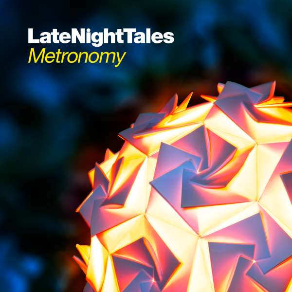
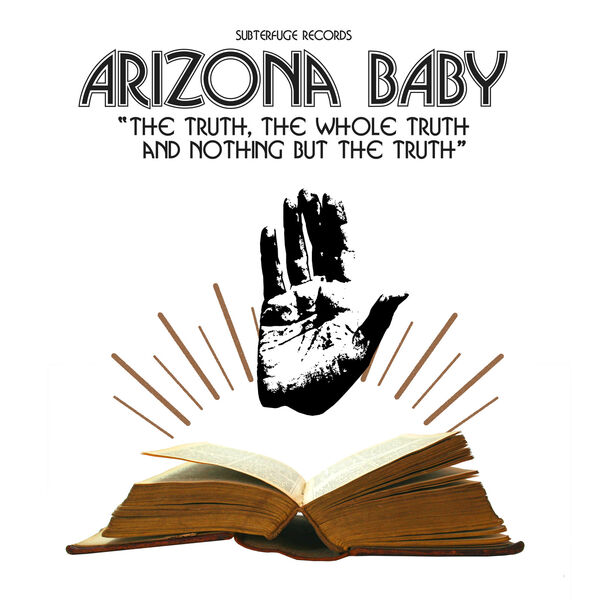
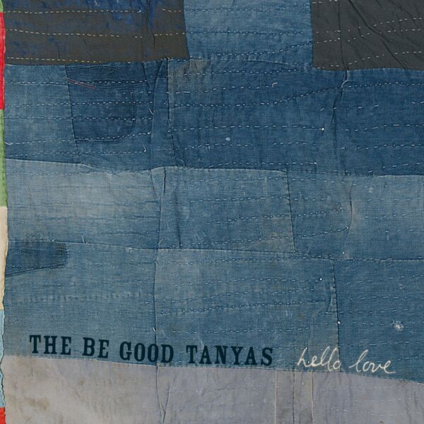
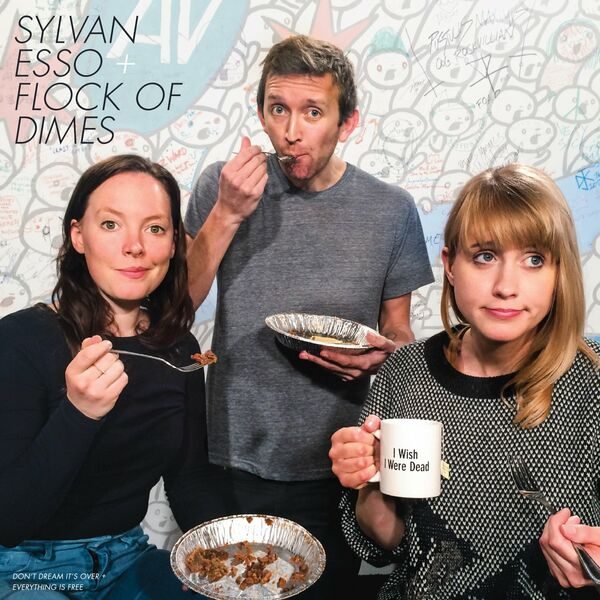
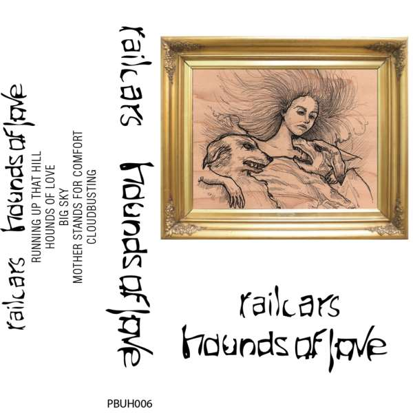
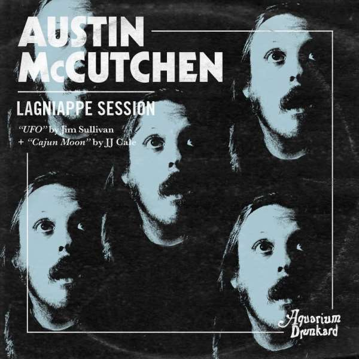
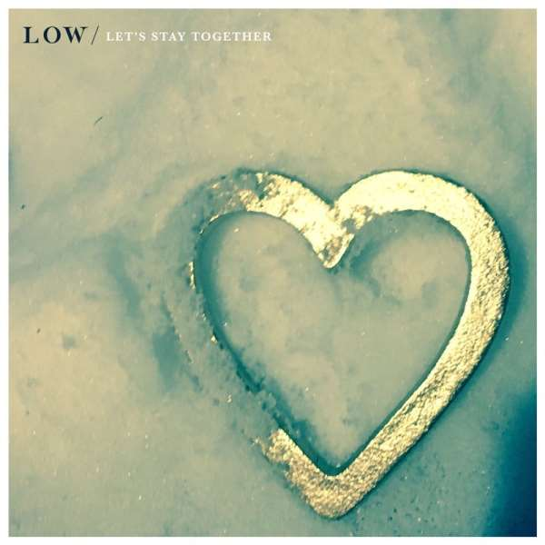
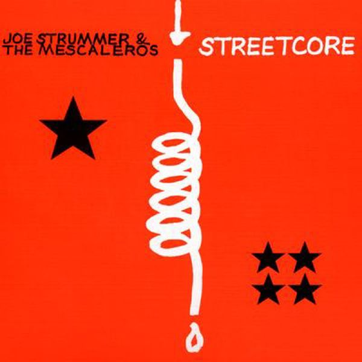
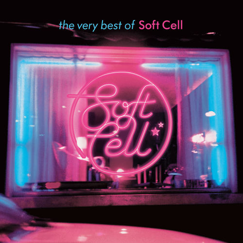
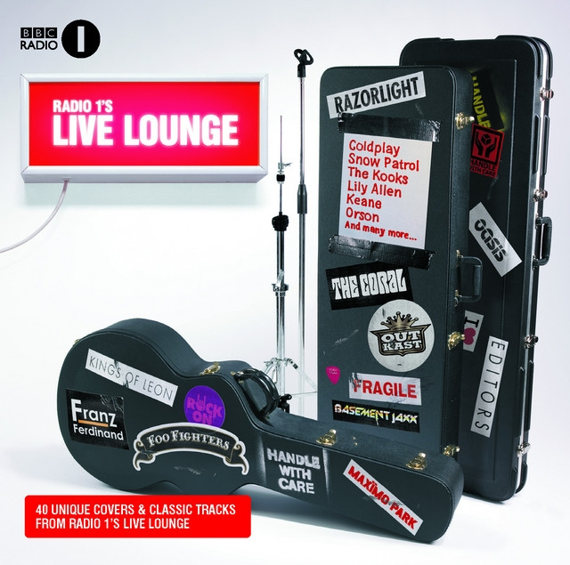

01Seabird
Alessi Brothers – LateNightTales: Metronomy (2012)
orig. Fleetwood Mac
 02
02
Africa
Low – A.V. Club Undercover (2011)
orig. Toto
 03
03
Sound and Vision
Megapuss/Devendra Banhart – We Were So Turned On: A Tribute To David Bowie (2010)
orig. David Bowie

04Das Model
Arizona Baby – The Truth, the Whole Truth and Nothing but the Truth (2013)
orig. Kraftwerk
 05
05
Sex Beat
Katy Goodman/Greta Morgan – Take It, It's Yours (2016)
orig. The Gun Club

06What Are They Doing In Heaven Today?
The Be Good Tanyas – Hello Love (2006)
orig. Charles Albert Tindley

07Everything Is Free
Flock of Dimes – Don't Dream It's Over / Everything Is Free (2015)
orig. Gillian Welch
 08
08
Bedside Table
Adem – Takes (2008)
orig. Bedhead

09Cloudbusting
Railcars – Hounds of Love (2011)
orig. orig Kate Bush
 10
10
Day Tripper
Yellow Magic Orchestra – Solid State Survivor (1979)
orig. Beatles
 11
11
Dreams
The Electric Peanut Butter Company / Shawn Lee / Adrian Quesada – Trans-Atlantic Psych Classics Vol.2 (2013)
orig. Fleetwood Mac
12
Every time you go away
LIPS – LIPS (2012)
orig. Paul Young
 13
13
Love Will Tear Us Apart
Albert Kuvezin And Yat-Kha – Re-Covers (2006)
orig. Joy Division
 14
14
Can't Hardley Wait
Mikal Cronin – Aquarium Drunkard: Lagniappe Sessions - Mikal Cronin (Third Session) (2019)
orig. The Replacements
 15
15
Bastards of Young
Katy Goodman/Greta Morgan – Take It, It's Yours (2016)
orig. The Replacements

16UFO
Austin McCutchen – The Lagniappe Sessions :: Austin McCutchen (2020)
orig. Jim Sullivan
 17
17
About Her Eyes
RF Shannon – Aquarium Drunkard: Lagniappe Sessions - RF Shannon (2018)
orig. Jerry Jeff Walker
18
Aka piketbuss igen (Looking Out My Back Door) (orig. Creedence Clearwater -
AIK Trubaduren – Derbykungar (2015)

19Let's Stay Together
Low – Let's Stay Together (2018)
orig. Al Green

20Redemption Song
Joe Strummer & The Mescaleros – Streetcore (2003)
orig. Bob Marley

21Where Did Our Love Go?
Soft Cell – The Very Best Of Soft Cell (2002)
orig. The Supremes

22Gold Digger (Live)
The Automatic feat. Jamie Foxx – BBC Radio 1's Live Lounge (2006)
orig. Kanye West